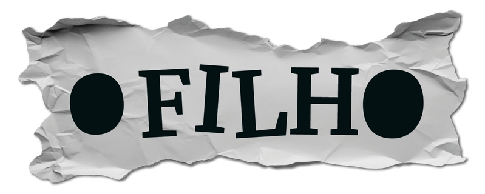
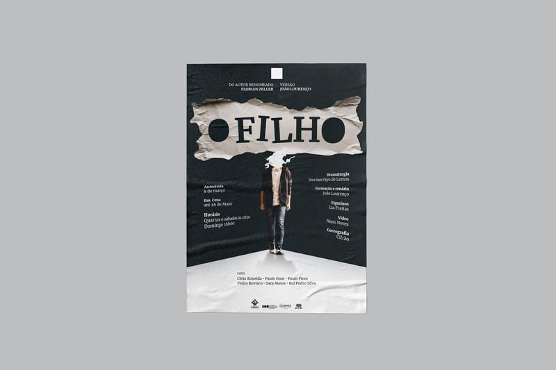
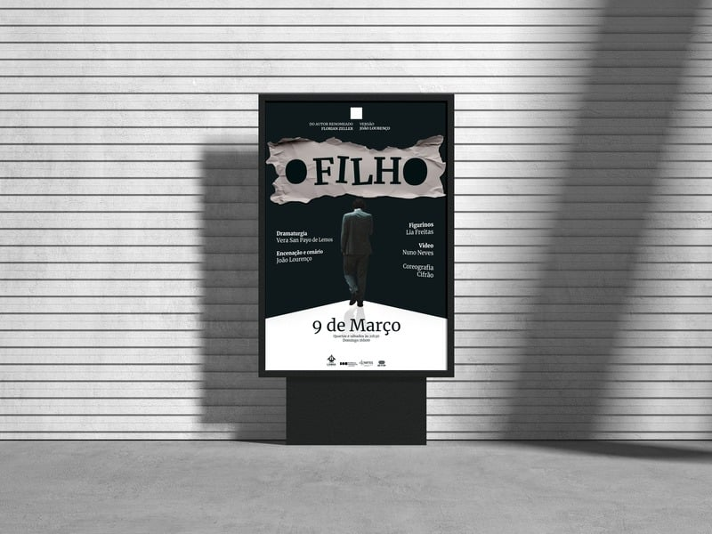
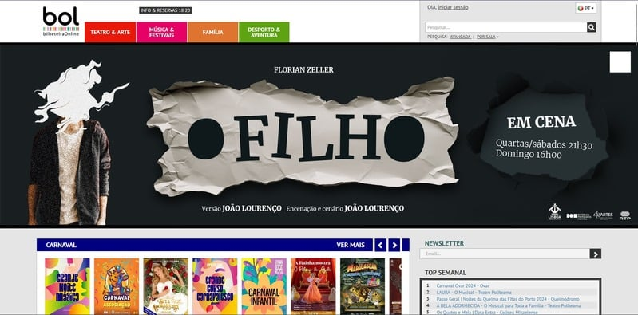
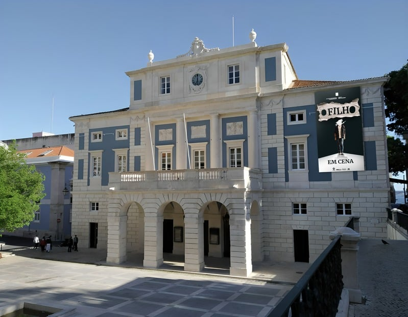
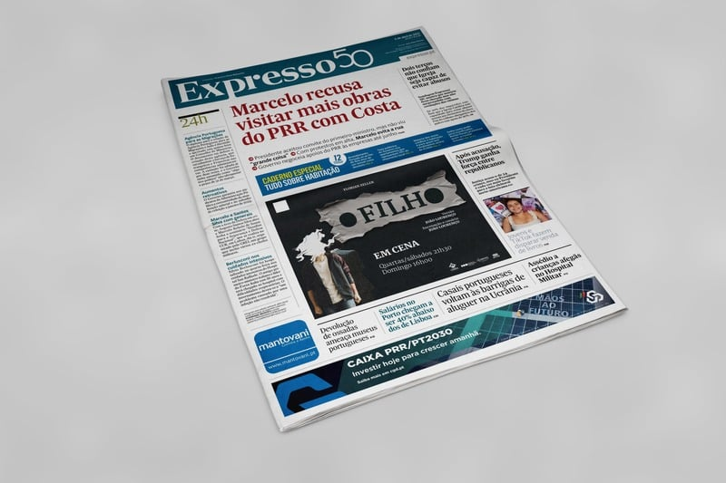

02 / 04
O Filho
Criei as peças de comunicação para a peça de teatro “O Filho”. Quis que a proposta visual refletisse os temas centrais da peça: a complexidade das relações familiares, os desafios emocionais da adolescência e a dificuldade de comunicação entre pais e filhos.
Para traduzir essa tensão usei uma paleta sombria e elementos que evocam introspeção e drama.

Aa
Tipografia — Merriweather
ABCDEFGHIJKLMNOPQRSTUVWXYZ
abcdefghijklmnopqrstuvwxyz
0123456789 @ , . # € ! ?
abcdefghijklmnopqrstuvwxyz
0123456789 @ , . # € ! ?




